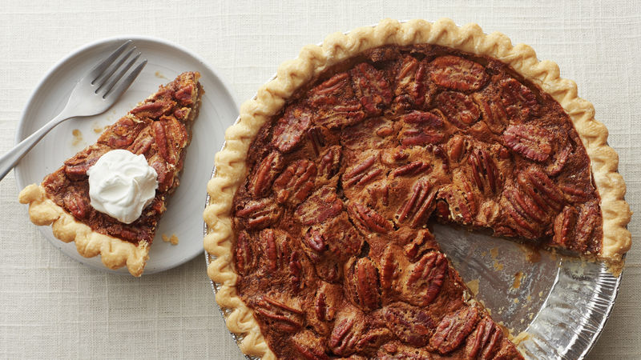

CARAMEL PECAN PIE

Buttery caramel candies team up with nutty pecans in this caramel pecan pie that's full of flavor
and perfect for your Thanksgiving table. Enjoy this caramel-flavored holiday classic either hot or cold,
with a generous dollop of whipped cream or a scoop of vanilla ice cream.
INGREDIENTS
- 1 (9 inch) unbaked pie crust
- 36 individually wrapped caramels, unwrapped
- ¼ cup unsalted butter
- ¼ cup milk
- ¾ cup white sugar
- 3 large eggs
- ½ teaspoon vanilla extract
- ¼ teaspoon salt
- 1 cup pecan halves
STEPS
- Preheat the oven to 350 degrees F (175 degrees C.)
- Combine caramels, butter, and milk in a saucepan over low heat. Cook, stirring frequently,
until caramels are melted and mixture is smooth, 10 to 15 minutes. Remove from the heat and set aside.
- Mix together sugar, eggs, vanilla, and salt in a large bowl. Gradually mix in the melted caramel mixture,
then stir in pecans. Pour filling into unbaked pie crust.
- Bake in the preheated oven until pastry is golden brown,
45 to 50 minutes. Remove from the oven and let set on a wire rack until filling is firm,
about 15 minutes. Serve warm or cold.
Back to recipes